library(dplyr) # Manejo de datos
library(sf) # Manejo de datos vectoriales
library(stars) # Manejo de datos raster
library(ggplot2) # Graficos en general y mapas
# remotes::install_github('r-tmap/tmap')
library(tmap) # Mapas temáticos
library(rgee) # GEE en R
source('src/s2_clean.R') # Funcion para limpiar nubesAplicación a escala fina
A partir de datos de rendimiento de maíz de un lote agrícola, se obtienen imágenes hiperespectrales de Sentinel-2, se extraen bandas de interés y se calculan índices de vegetación. La información es utilizada para delimitar áreas homogéneas dentro del lote.
Paquetes
R cuenta con diferentes paquetes especializados para poder leer y manejar datos espaciales. La información de datos espaciales se suelen representar de dos maneras
Tipos de datos espaciales
Los datos vectoriales, usando puntos, líneas y polígonos, permiten representar superficies
Los datos tipo ráster divide la superficie en celdas (pixeles) de tamaño constante
Manejo de datos vectoriales
El paquete sf es el más utilizado para la lectura y manejo de este tipo de datos. Los objetos de clase sf son básicamente objetos de clase data.frame al que se le adiciona una columna de tipo lista con la información espacial.
datosRto <- st_read('data/rto_mz_loteA.gpkg')## Reading layer `rto_mz_loteA' from data source
## `C:\Users\ariel\OneDrive\GitHub\PISAA_GAB_2023\data\rto_mz_loteA.gpkg'
## using driver `GPKG'
## Simple feature collection with 43308 features and 2 fields
## Geometry type: POINT
## Dimension: XY
## Bounding box: xmin: -64.1894 ymin: -31.85307 xmax: -64.18167 ymax: -31.84492
## Geodetic CRS: WGS 84datosRto## Simple feature collection with 43308 features and 2 fields
## Geometry type: POINT
## Dimension: XY
## Bounding box: xmin: -64.1894 ymin: -31.85307 xmax: -64.18167 ymax: -31.84492
## Geodetic CRS: WGS 84
## First 10 features:
## Masa_de_re Fecha geom
## 1 0.3652 2021-04-12 POINT (-64.18422 -31.84502)
## 2 0.5603 2021-04-12 POINT (-64.18428 -31.84502)
## 3 1.2455 2021-04-12 POINT (-64.18429 -31.84502)
## 4 0.7950 2021-04-12 POINT (-64.1843 -31.84502)
## 5 1.4490 2021-04-12 POINT (-64.18431 -31.84502)
## 6 1.9718 2021-04-12 POINT (-64.18432 -31.84502)
## 7 2.9731 2021-04-12 POINT (-64.18433 -31.84502)
## 8 3.5348 2021-04-12 POINT (-64.18435 -31.84502)
## 9 2.8453 2021-04-12 POINT (-64.18436 -31.84502)
## 10 2.7891 2021-04-12 POINT (-64.18437 -31.84502)poligonoLote <-
concaveman::concaveman(datosRto,
concavity = 2.5,
length_threshold = 0)
plot(poligonoLote)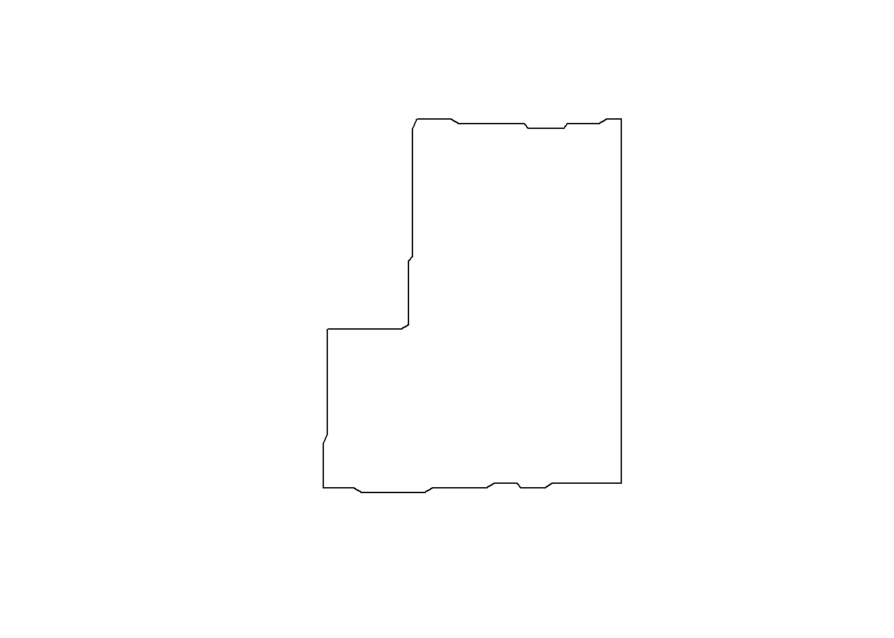
area <- st_area(poligonoLote)
# round(units::set_units(area, 'ha'), 0)El área del lote es de 54 ha.
Visualización
En general, uno de los paquetes más conocido utilizado para la visualización de datos es ggplot2, este paquete permite realizar gráficos de manera rápida. Además, el paquete tmap contiene funciones específicas para realizar mapas temáticos.
ggplot2
Para realizar un gráfico con este paquete es necesario ir sumando cada una de las partes del gráfico.
Idividualmente se especifican partes del gráfico. Luego estas partes se combinan para obtener el gráfico completo. Estas partes son:
- Datos
- Mapeo estético (aesthetic mapping)
- Objetos geométricos (geometric object)
- Transformaciones estadísticas (statistical transformations)
- Escalas (scales)
- Sistema de coordenadas (coordinate system)
- Ajustes de posición (position adjustments)
- Particiones (faceting)
Comenzaremos indicando que queremos hacer un gráfico utilizando el objeto datosRto
ggplot(datosRto)
ggplot(datosRto, aes(x = Masa_de_re))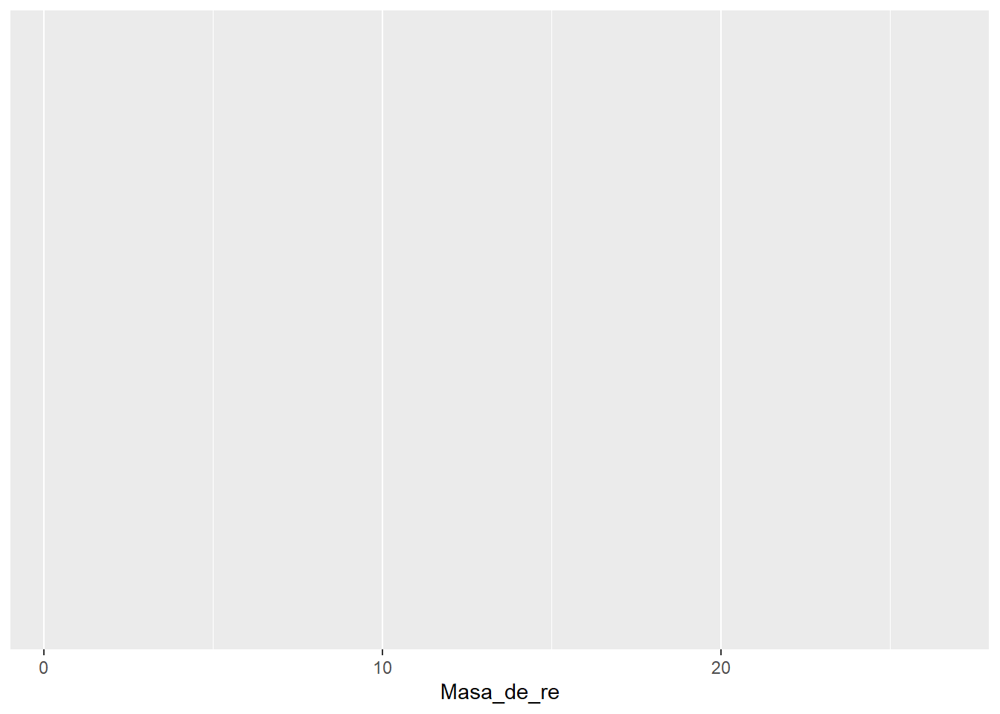
Podemos realizar un histograma de los datos de rendimiento adicionando una geometría de histograma
ggplot(datosRto) +
geom_histogram(aes(x = Masa_de_re))## `stat_bin()` using `bins = 30`. Pick better value with `binwidth`.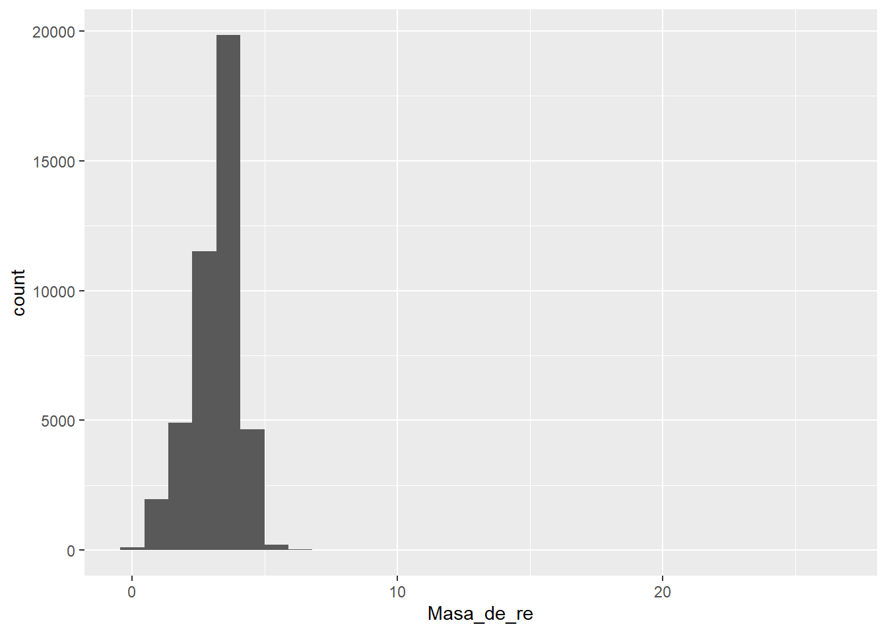
Podemos eliminar datos extremos
datosRto <-
datosRto |>
filter(Masa_de_re < 10)Además, mediante la función geom_sf podemos realizar mapas teniendo en cuenta la espacialidad de los puntos de redimiento
ggplot(datosRto) +
geom_sf()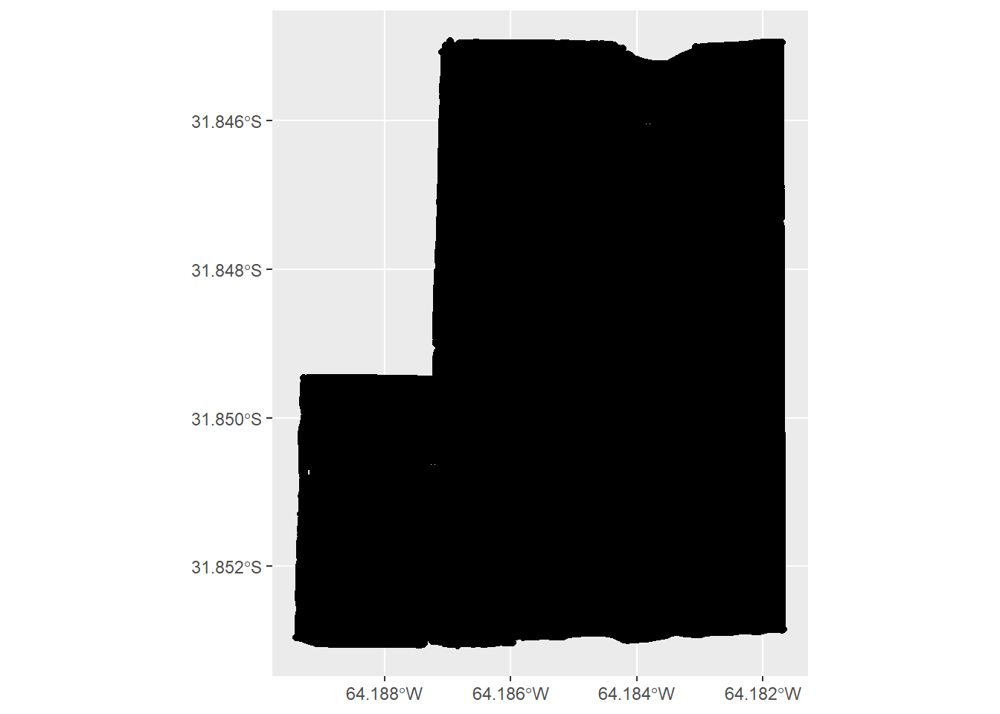
Podemos colorear nuestros puntos por los valores de rendimiento que se encuentran en la columna Masa_de_re. Para indicar esto, utilizamos la función aes, la cual es la abreviatura de estética (aesthetic mappings)
ggplot(datosRto) +
geom_sf(aes(color = Masa_de_re))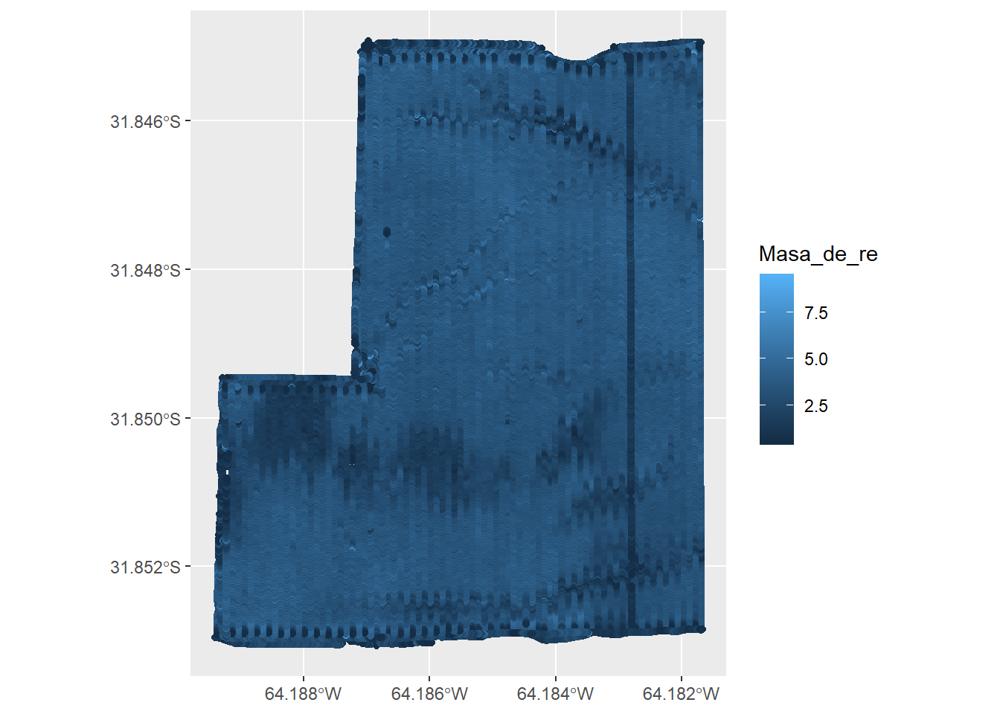
ggplot(datosRto) +
geom_sf(aes(color = Masa_de_re),
size = 0.5)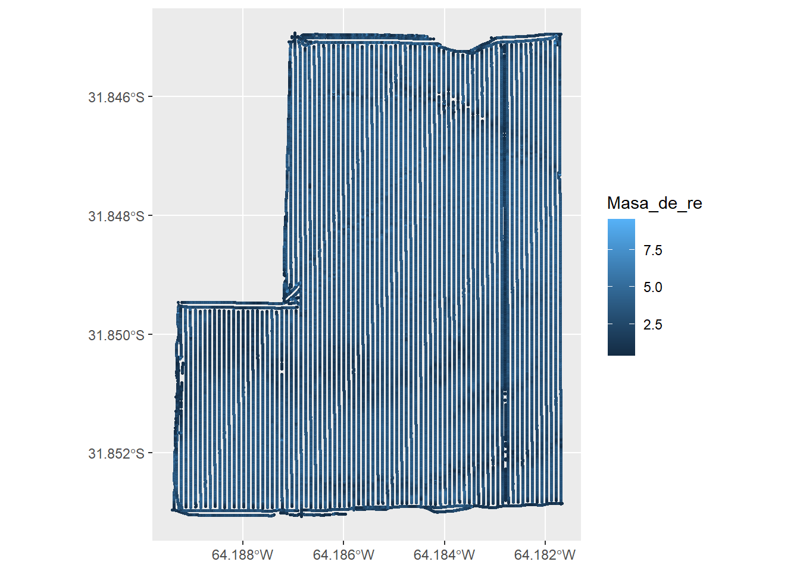
tmap
- La sintaxis es similar a
ggplot2, pero orientada a mapas - La mayoría de las funciones comienzan con
tm_* - Para comenzar a graficar, es necesario especificarlo con
tm_shape - Las capas se agregan mediante
+ - Permite graficar mapas estáticos o interactivos con el mismo código
tmap_mode().
tm_shape(datosRto) +
tm_dots()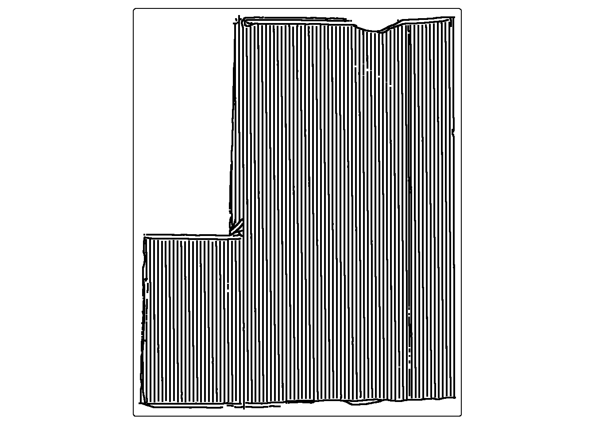
Y tambien podemos colorear por rendimiento
tm_shape(datosRto) +
tm_dots(fill = "Masa_de_re")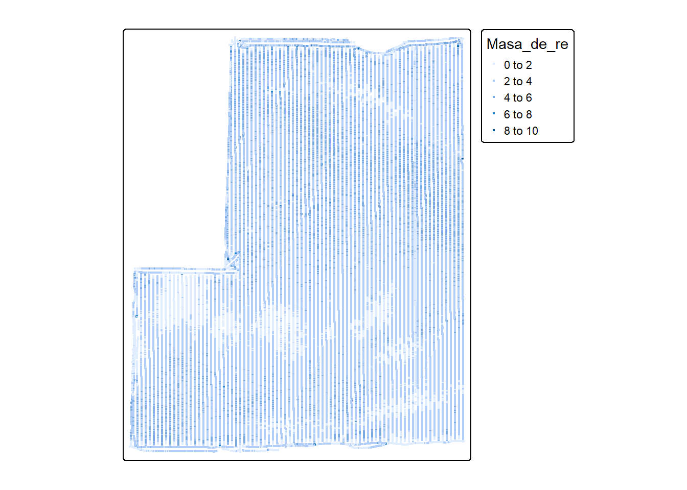
tm_shape(datosRto) +
tm_dots(fill = "Masa_de_re",
fill.scale = tm_scale_continuous())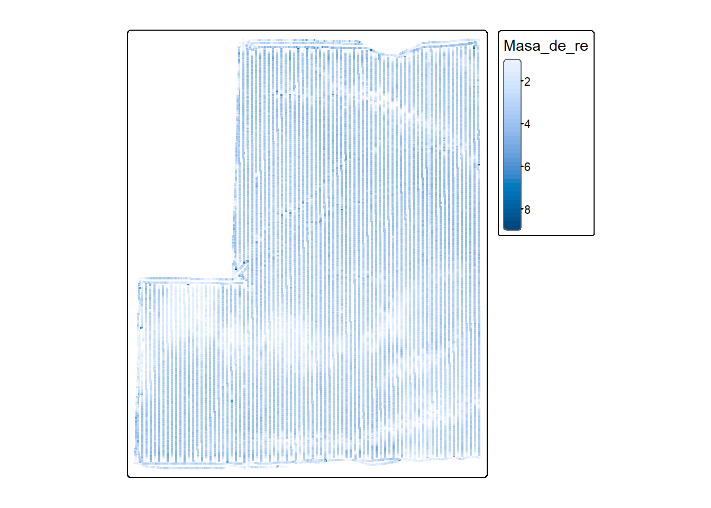
tmap_mode('view')## tmap mode set to 'view'tm_shape(poligonoLote) +
tm_polygons(col = 'red')
tmap_mode('plot')## tmap mode set to 'plot'tm_shape(datosRto) +
tm_dots(fill = 'Masa_de_re',
fill.scale = tm_scale_continuous(values = "brewer.greens"),
fill.legend = tm_legend(title = "Rendimiento\nkg/ha",
frame = FALSE)) +
tm_shape(poligonoLote) +
tm_polygons(fill = NA,
col = "red",
lwd = 2)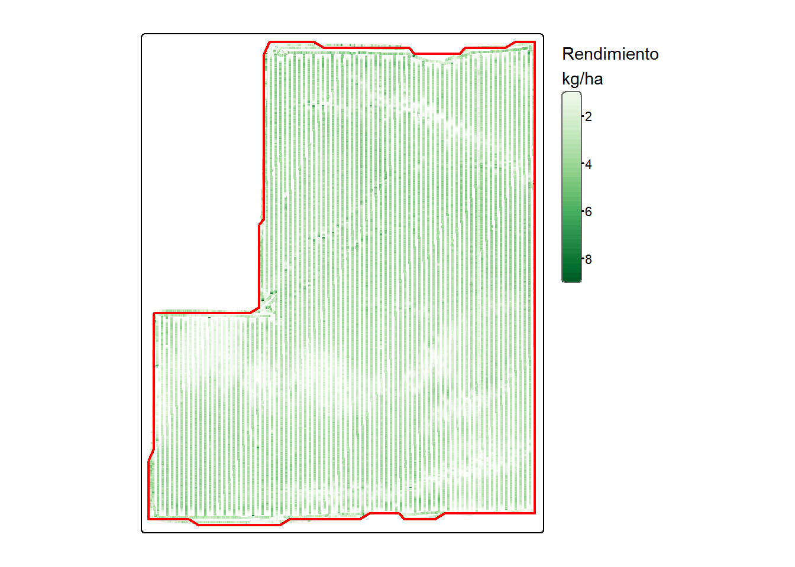
Transformación del sistema de coordenadas de referencia
Para poder interpretar las distancias entre puntos cambiaremos el sistema de coordenadas de referencia (crs).
datosRto <- st_transform(datosRto, 32720)
poligonoLote <- st_transform(poligonoLote, 32720)rgee
Autenticación y conexión a GEE a través de R. Autorizaremos tambien el uso de Google Drive mediante el argumento
rgee::ee_Initialize(drive = TRUE)## ── rgee 1.1.7 ─────────────────────────────────────── earthengine-api 0.1.374 ──
## ✔ user: not_defined
## ✔ Google Drive credentials:
✔ Google Drive credentials: FOUND
## ✔ Initializing Google Earth Engine:
✔ Initializing Google Earth Engine: DONE!
##
✔ Earth Engine account: users/pablopaccioretti
##
✔ Python Path: C:/Users/ariel/AppData/Local/r-miniconda/envs/rgee/python.exe
## ────────────────────────────────────────────────────────────────────────────────Descarga de imágenes satelitales (Sentinel-2) y cálculo del índice de vegetación de diferencia normalizada (NDVI)
El satélite Sentinel-2 es parte del programa Copernicus de la Unión Europea y la Agencia Espacial Europea (ESA). Está diseñado para proporcionar observaciones de la Tierra con una alta resolución espacial (10 metros) y temporal (5 días), especialmente para aplicaciones en la gestión de recursos naturales, agricultura, desarrollo urbano y respuesta a desastres. Proporciona imágenes multiespectrales con 13 bandas en el Espectro visible, en el infrarrojo cercano e infrarrojos de onda corta además del espectro electromagnético. Catálogo de GEE.
El NDVI es un índice usado para estimar la cantidad, calidad y desarrollo de la vegetación con base a la medición de la intensidad de la radiación de ciertas bandas del espectro electromagnético que la vegetación emite o refleja.
A continuación se utilizará el polígono de los bordes del lote para recortar la imagen satelital que luego se descargará. Para esto lo convertiremos de un objeto de R a un objeto que puede ser utilizado por GEE.
poligonoLote_ee <- rgee::sf_as_ee(poligonoLote)disponible <- ee$ImageCollection("COPERNICUS/S2_SR_HARMONIZED")$
filterDate("2023-09-10","2023-09-20")$
filterBounds(poligonoLote_ee$geometry())
misImagenes <- ee_get_date_ic(disponible)
misImagenes## id
## 1 COPERNICUS/S2_SR_HARMONIZED/20230911T140709_20230911T141042_T20HLK
## 2 COPERNICUS/S2_SR_HARMONIZED/20230914T141739_20230914T142045_T20HLK
## 3 COPERNICUS/S2_SR_HARMONIZED/20230916T140711_20230916T141715_T20HLK
## 4 COPERNICUS/S2_SR_HARMONIZED/20230919T141711_20230919T142226_T20HLK
## time_start
## 1 2023-09-11 14:21:46
## 2 2023-09-14 14:31:40
## 3 2023-09-16 14:21:46
## 4 2023-09-19 14:31:40miImages <- ee$Image(misImagenes[1,'id'])
viz = list(min = 0,
max = 13292,
bands = c('B4', 'B3', 'B2'),
gamma = 1.75)
Map$centerObject(eeObject = miImages, zoom = 9)
Map$addLayer(eeObject = miImages, visParams = viz) +
Map$addLayer(eeObject = poligonoLote_ee, visParams = list(color = 'red'))# Filtra por si hay superposición de imágenes
coveringFilter = ee$Filter$contains(
leftField = '.geo',
rightValue = poligonoLote_ee$geometry()
)start <- rgee::rdate_to_eedate(as.Date("2021-03-10"))
end <- rgee::rdate_to_eedate(as.Date("2021-03-30"))
sat_data_s2 <-
ee$ImageCollection("COPERNICUS/S2_SR_HARMONIZED")$
filterBounds(poligonoLote_ee$geometry())$
filter(ee$Filter$lte("CLOUD_COVERAGE_ASSESSMENT",
20))$
filter(ee$Filter$date(start, end))$
map(s2_clean)$
filter(coveringFilter)$
map(function(image) {
ndvi = image$normalizedDifference(c('B8', 'B4'))$rename('NDVI')
newBands = ee$Image(list(ndvi))
image$addBands(newBands)
})$
select(list(
'B3', 'B4', 'B8', 'B11', 'B12',
'NDVI'
))$
map(function(img) {
img$float()
})bandNames <- sat_data_s2$first()$bandNames()$getInfo()
cat("Nombre de bandas: ", paste(bandNames, collapse = ", "), '\n')Nombre de bandas: B3, B4, B8, B11, B12, NDVI
count <- sat_data_s2$size()
cat("Cantidad de fechas: ", count$getInfo(), '\n')Cantidad de fechas: 4
sat_data <- sat_data_s2$toBands()
sat_data_stars <- rgee::ee_as_stars(
sat_data,
region = poligonoLote_ee$geometry(),
scale = 10,
via = "drive"
)## - region parameters
## sfg : POLYGON ((-64.1884 -31.8531 .... 31.8531, -64.1884 -31.8531))
## CRS : GEOGCRS["WGS 84",
## DATUM["World Geodetic System 1984",
## ELLIPSOID["WGS 84",6378137,298.257223563, .....
## geodesic : FALSE
## evenOdd : TRUE
##
## - download parameters (Google Drive)
## Image ID : noid_image
## Google user : ndef
## Folder name : rgee_backup
## Date : 2023_10_11_12_34_05
## Polling for task <id: AG5ULXZNXJRBQYM47TYVHP44, time: 0s>.
## Polling for task <id: AG5ULXZNXJRBQYM47TYVHP44, time: 5s>.
## Polling for task <id: AG5ULXZNXJRBQYM47TYVHP44, time: 10s>.
## Polling for task <id: AG5ULXZNXJRBQYM47TYVHP44, time: 15s>.
## Polling for task <id: AG5ULXZNXJRBQYM47TYVHP44, time: 20s>.
## Polling for task <id: AG5ULXZNXJRBQYM47TYVHP44, time: 25s>.
## State: COMPLETED
## Moving image from Google Drive to Local ... Please waitsat_data_stars## stars_proxy object with 1 attribute in 1 file(s):
## $noid_image.tif
## [1] "[...]/noid_image.tif"
##
## dimension(s):
## from to offset delta refsys point
## x 1 74 387470 10 WGS 84 / UTM zone 20S FALSE
## y 1 92 6476150 -10 WGS 84 / UTM zone 20S FALSE
## band 1 24 NA NA NA NA
## values
## x NULL
## y NULL
## band 20210310T141051_20210310T141958_T20HLK_B3,...,20210328T141739_20210328T142852_T20HLK_NDVI
## x/y
## x [x]
## y [y]
## bandplot(sat_data_stars)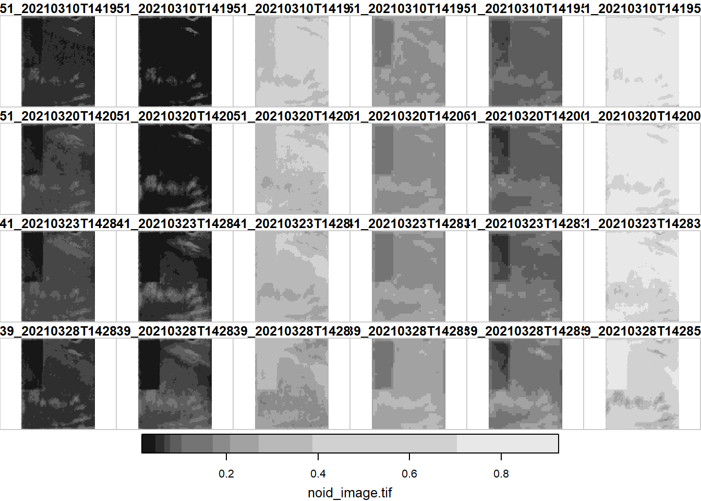
sat_data_stars <- st_crop(sat_data_stars, poligonoLote)nombre_bandas <- st_get_dimension_values(sat_data_stars, 'band')
bandas_ndvi <- which(grepl("NDVI", nombre_bandas))
tm_shape(st_as_stars(sat_data_stars[,,,bandas_ndvi])) +
tm_raster()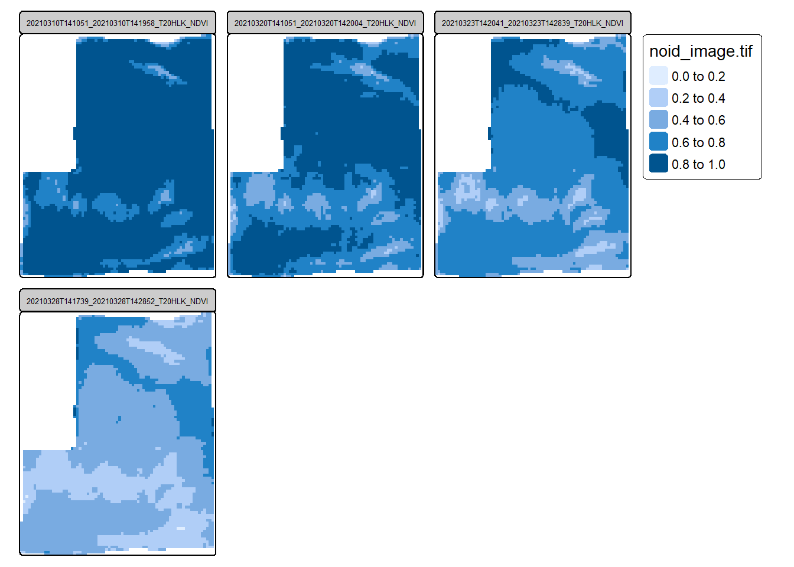
Delimitación de zonas homogéneas
sat_data_sf <- st_as_sf(sat_data_stars,
as_points = TRUE)plot(sat_data_sf)## Warning: plotting the first 10 out of 24 attributes; use max.plot = 24 to plot
## all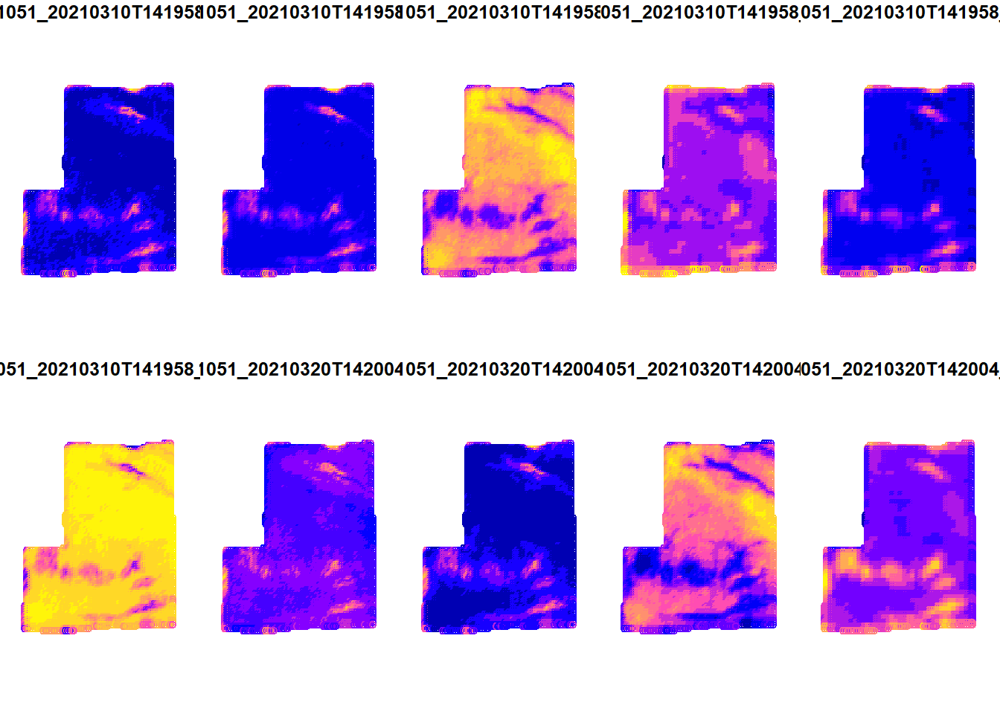
cluster <- paar::kmspc(
sat_data_sf,
variables = colnames(st_drop_geometry(sat_data_sf)),
number_cluster = 2:4)cluster$summaryResults## Clusters Iterations SSDW
## 1 2 13 5.371085
## 2 3 68 3.008367
## 3 4 53 1.729154cluster$indices## Num. Cluster Xie Beni Partition Coefficient Entropy of Partition
## 1 2 1.374188e-05 0.9838948 0.02694665
## 2 3 3.556734e-05 0.9598127 0.06561608
## 3 4 3.385617e-05 0.9595727 0.06657575
## Summary Index
## 1 1.145906
## 2 1.709686
## 3 1.690344cluster_data <- cbind(sat_data_sf, cluster$cluster)tm_shape(cluster_data) +
tm_dots(fill = 'Cluster_2',
fill.scale = tm_scale_categorical())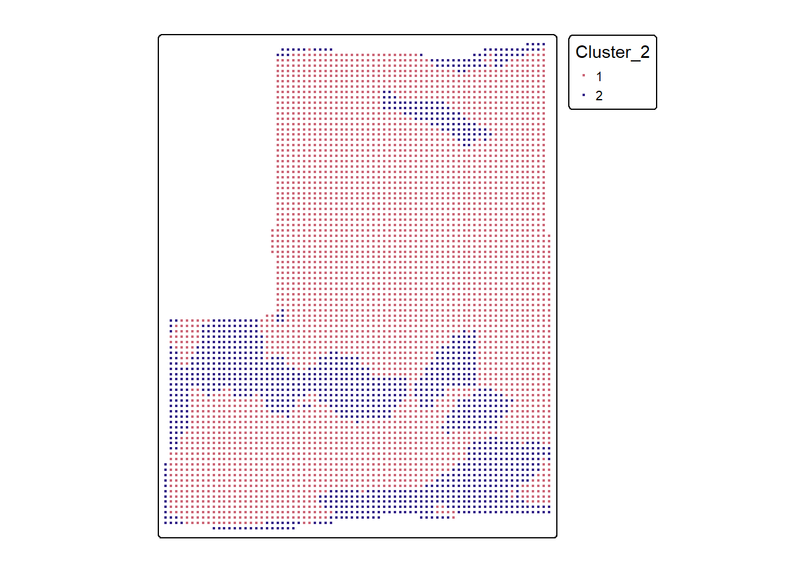
cluster_data_poly <- st_join(
st_as_sf(sat_data_stars,
as_points = FALSE),
cluster_data[, c("Cluster_2", "Cluster_3", "Cluster_4")]
)tmap_arrange(
tm_shape(cluster_data_poly) +
tm_polygons(fill = 'Cluster_2',
fill.scale = tm_scale_categorical()),
tm_shape(datosRto) +
tm_dots(fill = 'Masa_de_re',
fill.scale = tm_scale_continuous()),
ncol = 2
)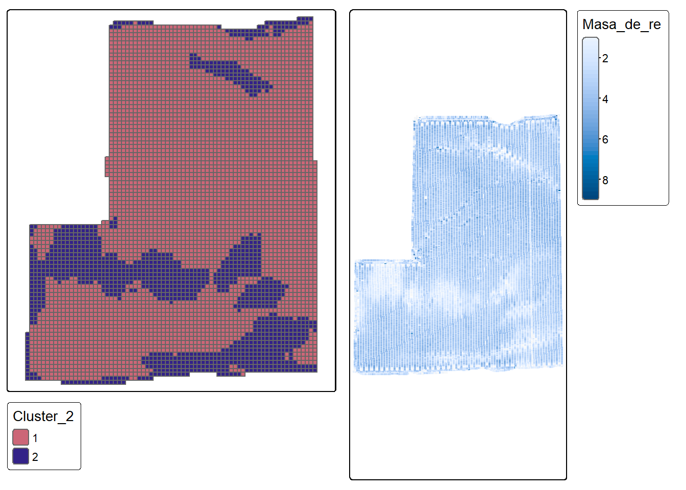
tmap_mode('view')## tmap mode set to 'view'tm_basemap("Esri.WorldImagery") +
tm_shape(cluster_data_poly) +
tm_polygons(fill = 'Cluster_2',
fill.scale = tm_scale_categorical())Caracterización de clústers
datos_rendimiento_zonas <-
st_join(datosRto[, "Masa_de_re"],
cluster_data_poly[, "Cluster_2"],
left = FALSE)datos_rendimiento_zonas |>
mutate(mediaGral = mean(Masa_de_re, na.rm = TRUE)) |>
group_by(Cluster_2) |>
reframe(
n = n(),
media = mean(Masa_de_re, na.rm = TRUE),
CV = sd(Masa_de_re) / media * 100,
mediaGeneral = unique(mediaGral),
media_ratio = media/unique(mediaGral))## # A tibble: 2 × 6
## Cluster_2 n media CV mediaGeneral media_ratio
## <int> <int> <dbl> <dbl> <dbl> <dbl>
## 1 1 32227 3.45 19.4 3.17 1.09
## 2 2 9821 2.27 38.7 3.17 0.715ggplot(datos_rendimiento_zonas,
aes(as.factor(Cluster_2), Masa_de_re)) +
stat_summary(fun.data = mean_se,
geom = "bar") +
labs(y = "Rendimiento",
x = "Clúster")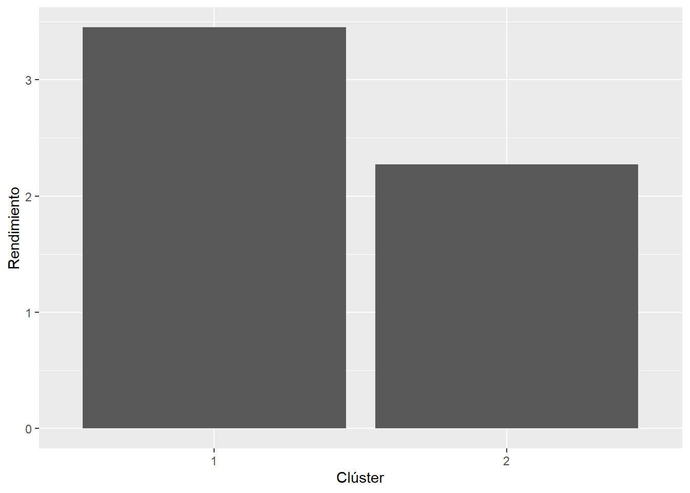
Animación
start_gif <- "2020-12-01"
end_gif <- "2021-05-01"
ndvi_s2 <- ee$ImageCollection("COPERNICUS/S2_SR_HARMONIZED")$
filterBounds(poligonoLote_ee$geometry())$
filter(ee$Filter$lte("CLOUD_COVERAGE_ASSESSMENT",
1))$
filter(ee$Filter$date(start_gif, end_gif))$
map(s2_clean)$
filter(coveringFilter)$
map(function(image) {
ndvi = image$normalizedDifference(c('B8', 'B4'))$rename('NDVI')
image$addBands(ndvi)
})$
select('NDVI')$
map(function(img) {
img$float()
})
distinctDOY <- ndvi_s2$filterDate(start_gif, end_gif)
# rgeeExtra::ee_maxValue(comp$toBands())
# rgeeExtra::ee_minValue(comp$toBands())
visParams = list(
min = 0.0,
max = 1,
bands = "NDVI",
palette = c(
'FFFFFF', 'CE7E45', 'DF923D', 'F1B555', 'FCD163', '99B718', '74A901',
'66A000', '529400', '3E8601', '207401', '056201', '004C00', '023B01',
'012E01', '011D01', '011301'
)
)
region <- poligonoLote_ee$geometry()$bounds()
rgbVis <- ndvi_s2$map(function(img) {
do.call(img$visualize, visParams) %>%
ee$Image$clip(poligonoLote_ee)
})
gifParams <- list(
region = region,
dimensions = 800,
crs = 'EPSG:32720',
framesPerSecond = 1.2
)
dates_mabbr <- distinctDOY %>%
ee_get_date_ic %>% # Get Image Collection dates
'[['("time_start") %>% # Select time_start column
format("%d-%m-%Y") # Get the month component of the datetimeanimation <- rgeeExtra::ee_utils_gif_creator(rgbVis, gifParams, mode = "wb")
animation %>%
rgeeExtra::ee_utils_gif_annotate(
text = "NDVI: Sentinel 2",
size = 15,
color = "white",
location = "+10+10"
) %>%
rgeeExtra::ee_utils_gif_annotate(
text = dates_mabbr,
size = 15,
location = "+10+30",
color = "white",
font = "arial",
boxcolor = "#000000"
) # -> animation_wtxt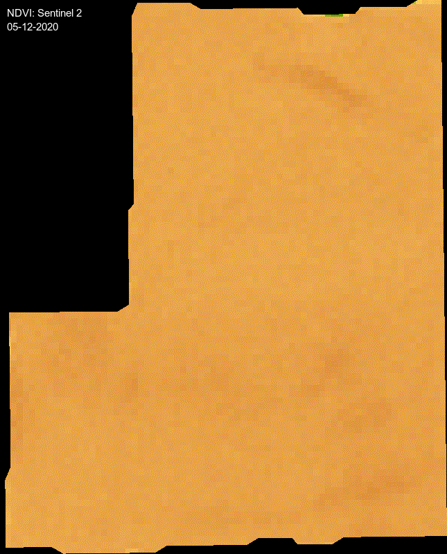
# rgeeExtra::ee_utils_gif_save(animation_wtxt, path = "raster_as_ee.gif")